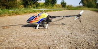
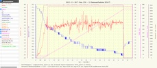

The T-Rex 250, with 250 mm rotor blades I bought used for 100 €.
I converted the helicopter from paddle to use for a flybarless system.
The available gyro receivers could already replace using the helicopter mode an external flybarLess system.
Again, I had a larger battery pack, although the flight time per battery was 6 minutes.
Despite already good practice, I had to pay quite a bit for spare parts.
A typical helicopter flight in terms of data. The voltage drops over time, the current varies greatly and the rotor runs per minute remains very constant.

After a few years of intensive flying with helicopters, I returned to gliding. Here flights with one hour flight time are almost always possible and you do not have to permanently charge a large number of batteries.